Chapter 5 Research Question 3
How can we incorporate climate metrics into a marine reserve design workflow?
To answer this, we basically do what we did in Research Question 2, but for the other two approaches: “feature” and “penalty” approaches.
The “feature” approach treats the climate metrics as features, with their own representation targets (i.e. conserving 40% of low exposure/high retention areas). The “penalty” approach treats the climate metrics as linear penalties, penalizing solutions that select areas of high exposure/low retention. Again, we only show results forced under SSP 5-8.5.
We, however, don’t compare the results of the spatial designs created using the same approach. Instead, we compare them across approaches. To more effectively compare the approaches, we created low-regret areas, which are areas that are selected as climate refugia regardless of the climate metric used (for each approach). This is explored in greater detail in the next section where we aim to answer the differences between climate-smart strategies (metrics + approaches).
In this section, we focus on creating the actual climate-smart spatial designs for “feature” and “percentile” approach.
5.1 Climate-smart spatial designs under the “feature” approach
5.1.1 Climate-smart spatial design (Rate of Climate Warming; “Feature” Approach)
We first create the spatial planning problem:
# using Effective 40% Protection. Since we only considered the climate_layer as 1s if they are under (or above for phos and o2os) the 50th percentile (0.5), we multiply it by 0.8 to get an effective protection of 40%.
targets <- features %>% as_tibble() %>%
setNames(., "Species") %>%
add_column(target = 0.4) %>%
mutate(target = ifelse(Species == "climate_layer", 0.8, 0.4))
p6 <- prioritizr::problem(out_sf, features, "Cost_squish") %>%
add_min_set_objective() %>%
add_relative_targets(targets$target) %>%
add_binary_decisions() %>%
add_gurobi_solver(gap = 0, verbose = FALSE)We then solve this problem:
s6 <- prioritizr::solve(p6)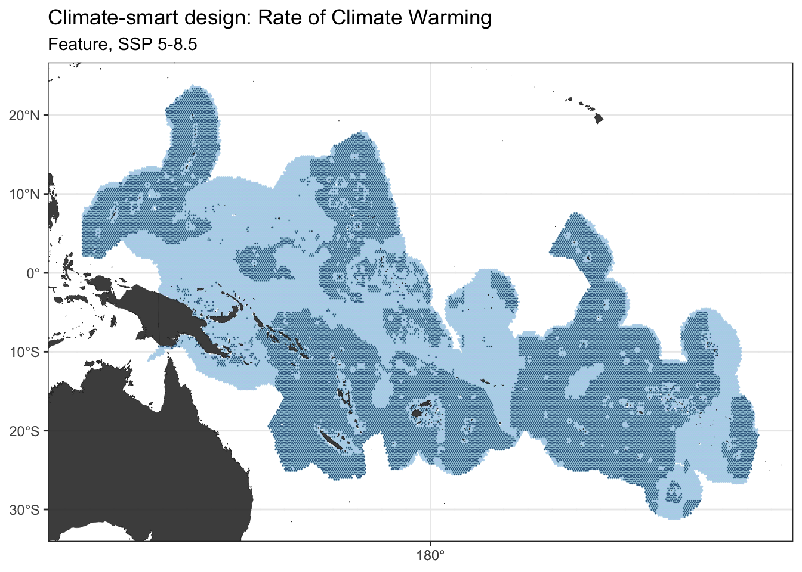
5.1.2 Climate-smart spatial design (Rate of Ocean Acidification; “Feature” Approach)
We create the spatial planning problem:
p7 <- prioritizr::problem(out_sf, features, "Cost_squish") %>%
add_min_set_objective() %>%
add_relative_targets(targets$target) %>%
add_binary_decisions() %>%
add_gurobi_solver(gap = 0, verbose = FALSE)We solve the problem:
s7 <- prioritizr::solve(p7)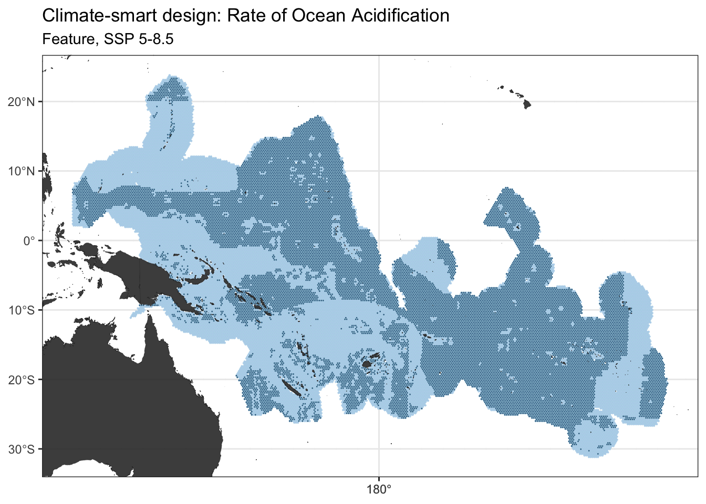
5.1.3 Climate-smart spatial design (Rate of Declining Oxygen Concentration; “Feature” Approach)
We create the spatial planning problem:
p8 <- prioritizr::problem(out_sf, features, "Cost_squish") %>%
add_min_set_objective() %>%
add_relative_targets(targets$target) %>%
add_binary_decisions() %>%
add_gurobi_solver(gap = 0, verbose = FALSE)Then we solve it:
s8 <- prioritizr::solve(p8)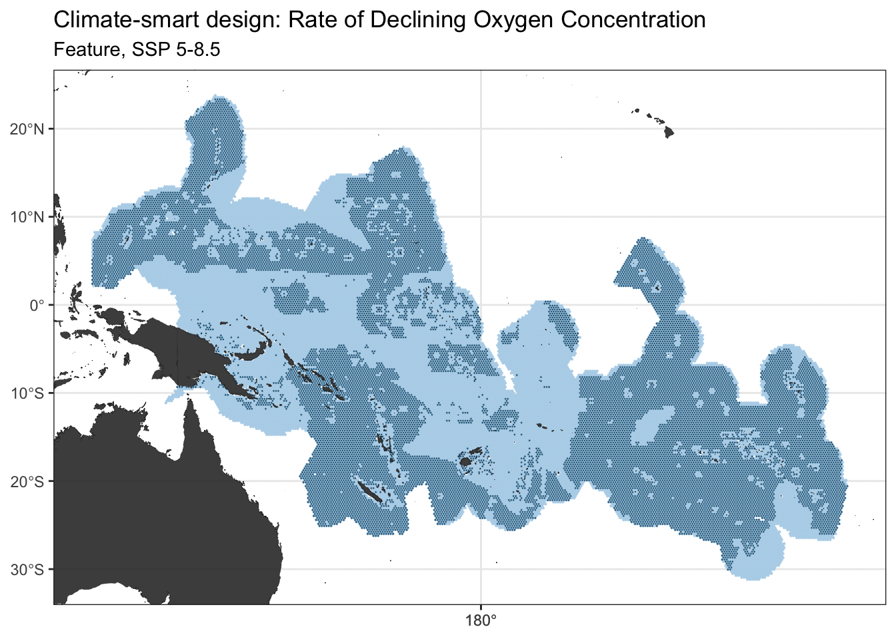
5.1.4 Climate-smart spatial design (Climate Velocity; “Feature” Approach)
We then create the spatial planning problem:
p9 <- prioritizr::problem(out_sf, features, "Cost_squish") %>%
add_min_set_objective() %>%
add_relative_targets(targets$target) %>%
add_binary_decisions() %>%
add_gurobi_solver(gap = 0, verbose = FALSE)Then solve it:
s9 <- prioritizr::solve(p9)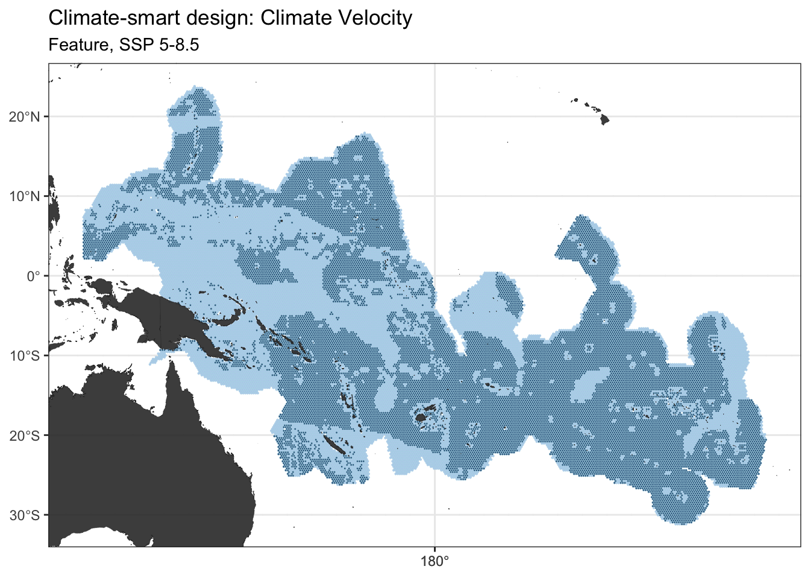
For now, just check Cohen’s Kappa Correlation Matrix. All other summaries will be reported at the end of this section.
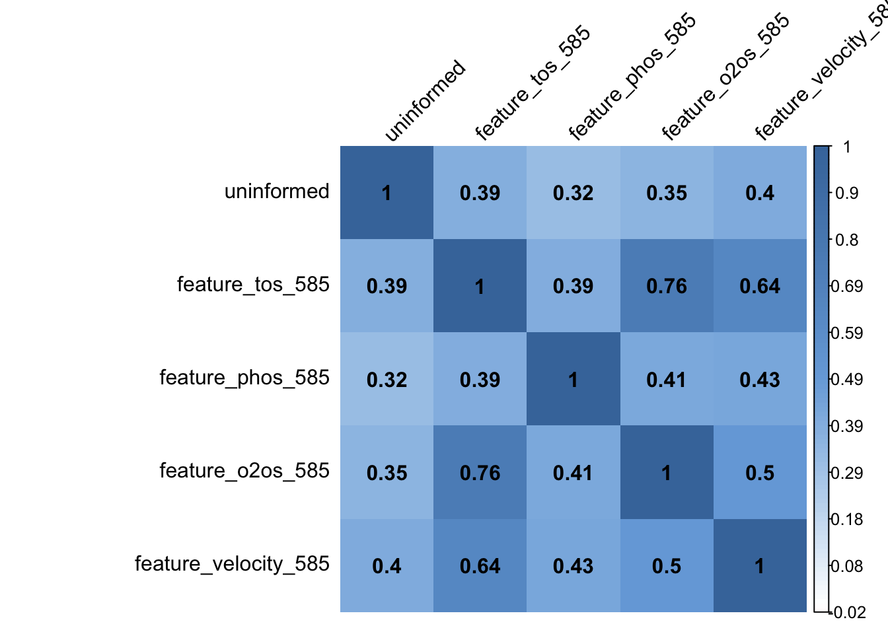
## uninformed feature_tos_585 feature_phos_585 feature_o2os_585 feature_velocity_585
## uninformed 1.0000000 0.3865149 0.3178626 0.3501021 0.4040259
## feature_tos_585 0.3865149 1.0000000 0.3949420 0.7575275 0.6439572
## feature_phos_585 0.3178626 0.3949420 1.0000000 0.4139403 0.4250015
## feature_o2os_585 0.3501021 0.7575275 0.4139403 1.0000000 0.5000843
## feature_velocity_585 0.4040259 0.6439572 0.4250015 0.5000843 1.00000005.2 Climate-smart spatial designs under the “penalty” approach
The penalty scaling for each of the designs is different. It’s calculated using the following equation:
\(scaling_{ClimateMetric}\) \(= \frac{(Cost_{Max} - Cost_{Min})}{(ClimateMetric_{Max} - ClimateMetric_{Min})} \cdot (Scaling_{percent})\)
5.2.1 Climate-smart spatial design (Rate of Climate Warming; “Penalty” Approach)
Set up the spatial planning problem:
p10 <- prioritizr::problem(out_sf, features, "Cost_squish") %>%
add_min_set_objective() %>%
add_relative_targets(0.4) %>% # target is 40% for all features.
add_binary_decisions() %>%
add_gurobi_solver(gap = 0, verbose = FALSE) %>%
add_linear_penalties(scaling, data = "slpTrends")Solve problem:
s10 <- prioritizr::solve(p10)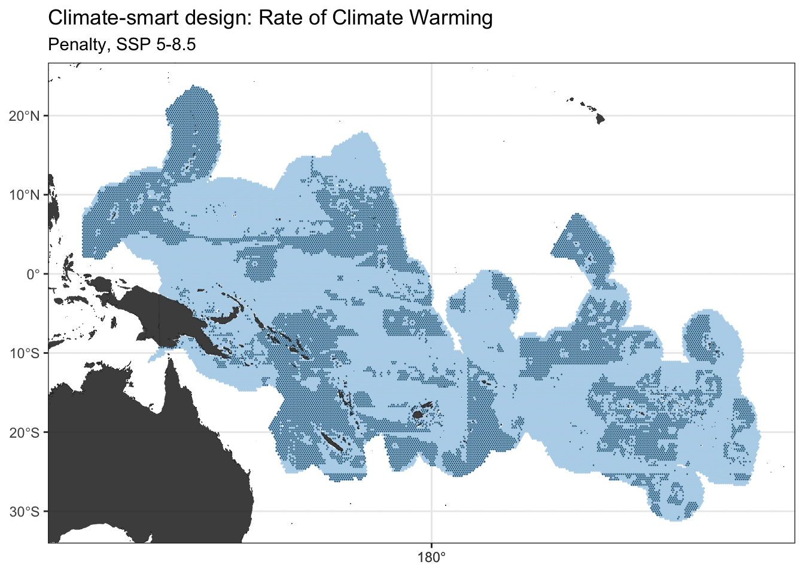
5.2.2 Climate-smart spatial design (Rate of Ocean Acidification; “Penalty” Approach)
We create the problem:
p11 <- prioritizr::problem(out_sf, features, "Cost_squish") %>%
add_min_set_objective() %>%
add_relative_targets(0.4) %>% # target is 40% for all features.
add_binary_decisions() %>%
add_gurobi_solver(gap = 0, verbose = FALSE) %>%
add_linear_penalties(scaling, data = "slpTrends")Then solve it:
s11 <- prioritizr::solve(p11)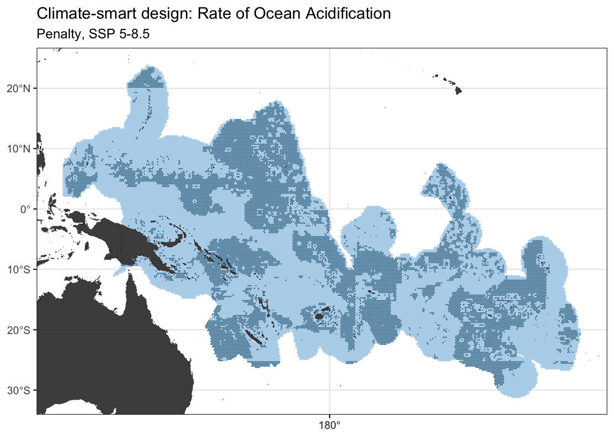
5.2.3 Climate-smart spatial design (Rate of Declining Oxygen Concentration; “Penalty” Approach)
We create the problem:
p12 <- prioritizr::problem(out_sf, features, "Cost_squish") %>%
add_min_set_objective() %>%
add_relative_targets(0.4) %>% # target is 40% for all features.
add_binary_decisions() %>%
add_gurobi_solver(gap = 0, verbose = FALSE) %>%
add_linear_penalties(scaling, data = "slpTrends")We solve it:
s12 <- prioritizr::solve(p12)5.2.4 Cliamte-smart spatial design (Climate velocity; “Penalty” Approach)
Create the spatial planning problem:
p13 <- prioritizr::problem(out_sf, features, "Cost_squish") %>%
add_min_set_objective() %>%
add_relative_targets(0.4) %>% # target is 40% for all features.
add_binary_decisions() %>%
add_gurobi_solver(gap = 0, verbose = FALSE) %>%
add_linear_penalties(scaling, data = "voccMag")Solve it:
s13 <- prioritizr::solve(p13)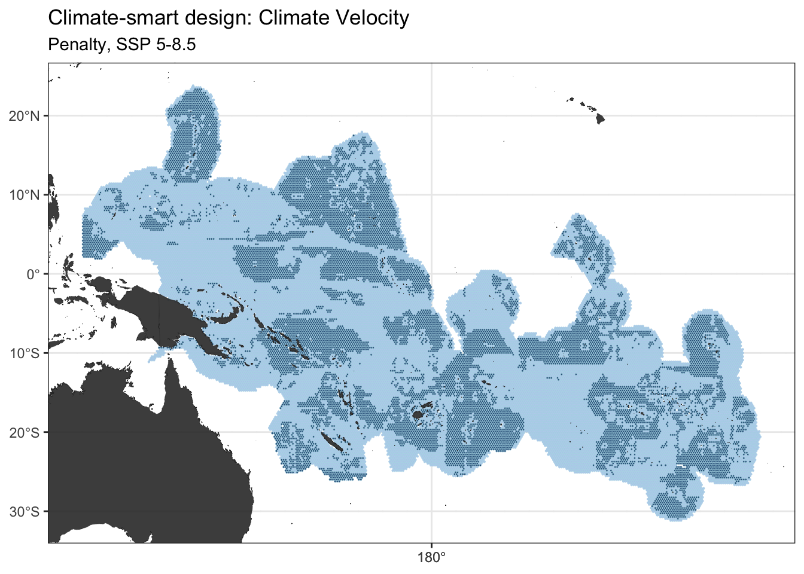
Cohen’s Kappa Correlation Matrix:
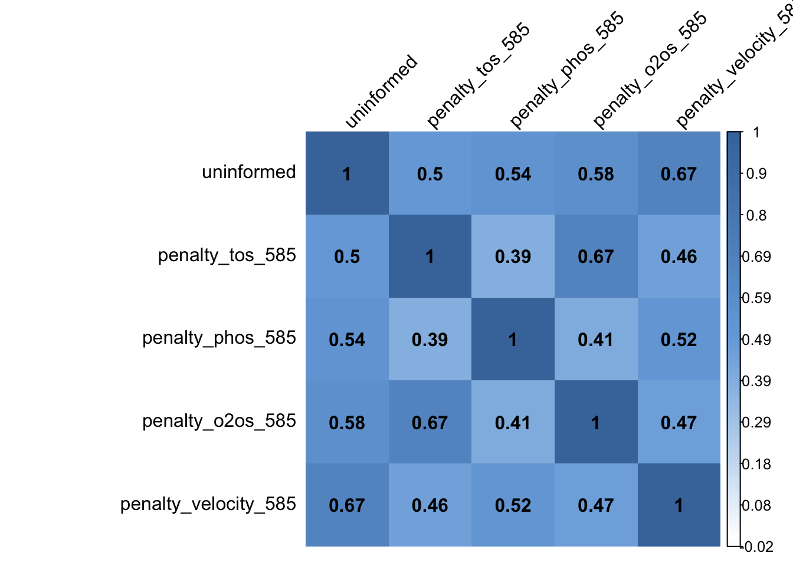
## uninformed penalty_tos_585 penalty_phos_585 penalty_o2os_585 penalty_velocity_585
## uninformed 1.0000000 0.5026312 0.5442304 0.5766637 0.6722008
## penalty_tos_585 0.5026312 1.0000000 0.3853954 0.6710882 0.4575840
## penalty_phos_585 0.5442304 0.3853954 1.0000000 0.4064749 0.5238846
## penalty_o2os_585 0.5766637 0.6710882 0.4064749 1.0000000 0.4664162
## penalty_velocity_585 0.6722008 0.4575840 0.5238846 0.4664162 1.00000005.3 Compare climate-smart spatial designs
This part also partially answers the fourth research question.
Total cost and percent area protected:
ggComparison_Cost + ggComparison_Area + plot_layout(guides = "collect")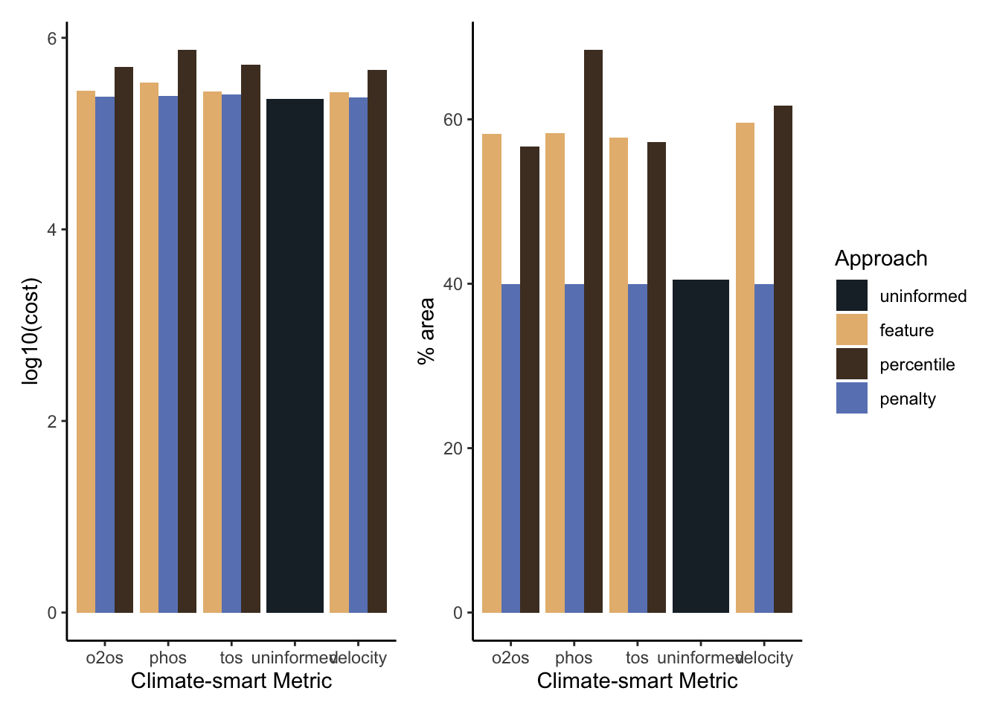 Climate warming:
ggComparison_Warming + ggComparison_LogWarming + plot_layout(guides = "collect")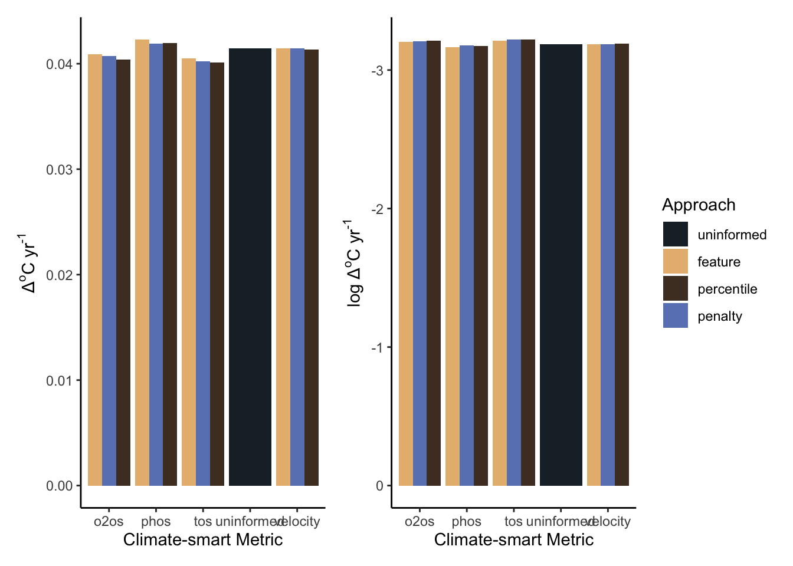 Ocean Acidification:
ggComparison_OceanAcidification + ggComparison_LogOceanAcidification + plot_layout(guides = "collect")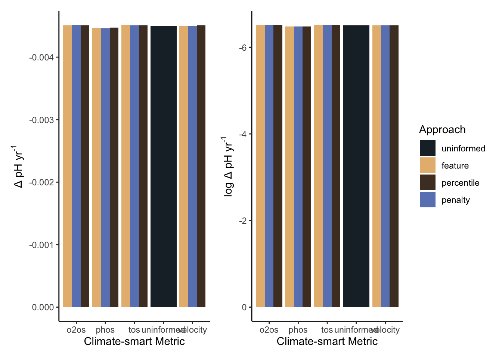 Declining Oxygen Concentration:
ggComparison_OxygenDecline + ggComparison_LogOxygenDecline + plot_layout(guides = "collect")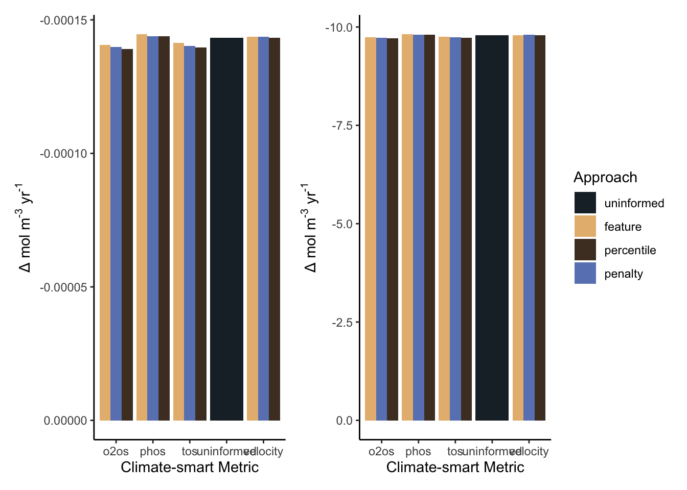 Climate velocity:
ggComparison_ClimateVelocity + ggComparison_LogClimateVelocity + plot_layout(guides = "collect")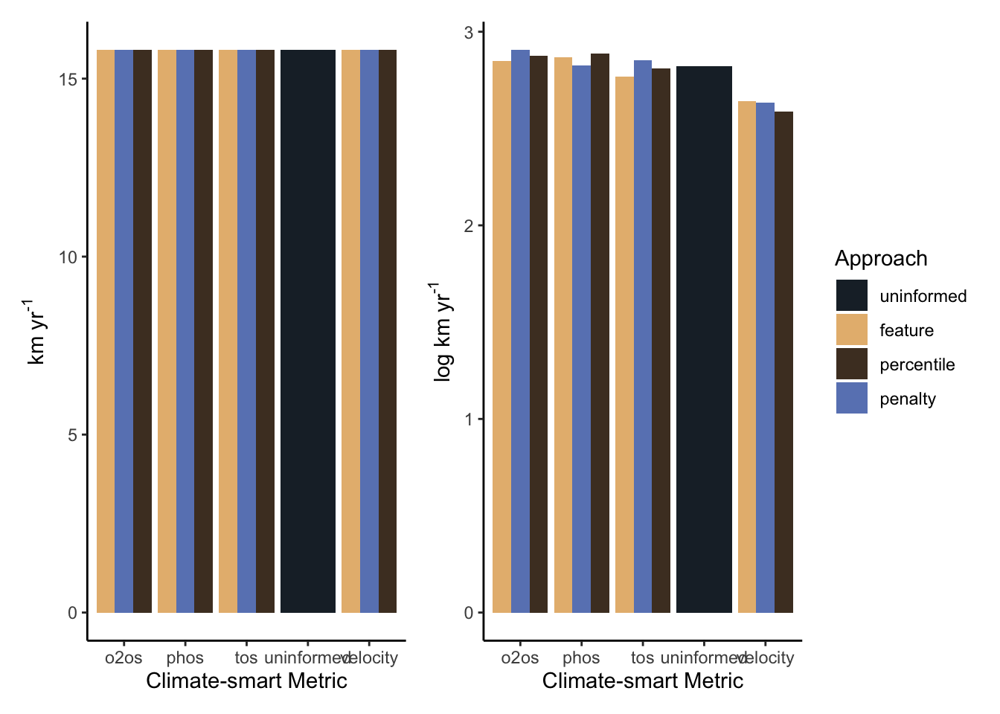